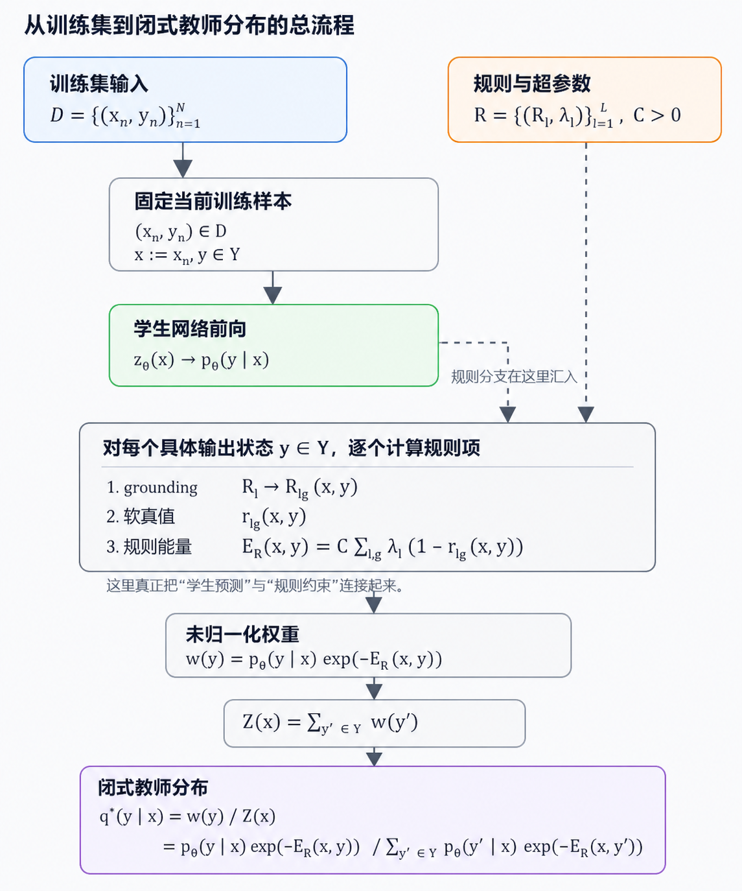
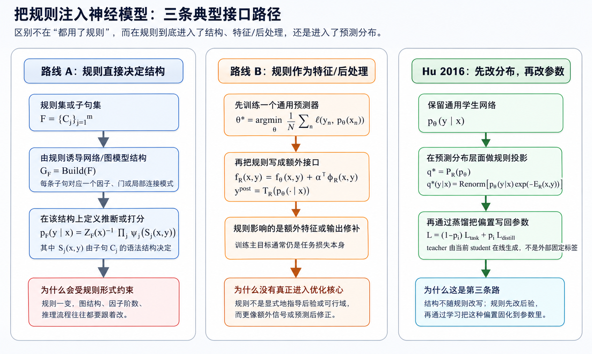
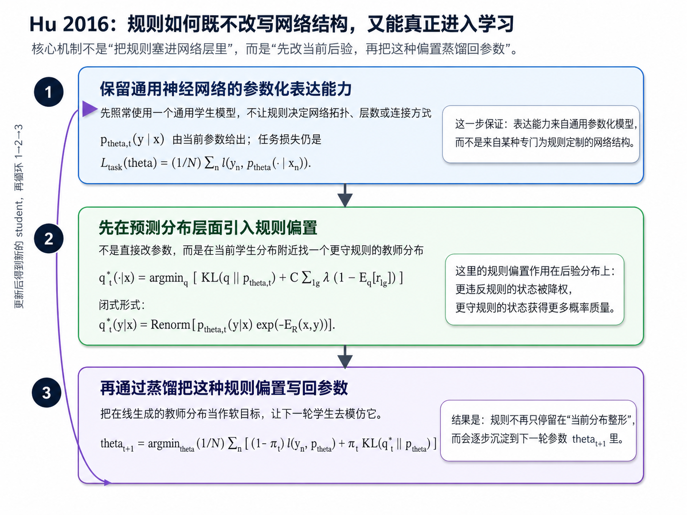

0. 名称消歧与论文来源确认
0.1 为什么必须先消歧
Logic-Net 这一名称在现有文献、项目命名和二手笔记里并不总是唯一对应同一篇论文。
这里的关键在于：如果论文来源没有先确认，后续关于逻辑编码、优化目标、teacher-student 机制和实验设定的讨论，极容易把不同工作的机制混在一起。
0.2 当前文档主要对应哪篇论文
当前这份文档主要对应的是：
- Hu et al., ACL 2016, Harnessing Deep Neural Networks with Logic Rules
这也是当前仓库中 LogicNet 条目、logic-net.txt 以及阅读路线实际指向的论文来源。
0.3 仍未确认的同名条目
另有一个尚未完成核对的同名条目，当前只保留占位，不补写技术细节：
- Possible ICML 2019 paper (to be confirmed)
0.4 本文的默认约定
因此，以下凡是涉及以下内容时，默认都指向 Hu et al. 2016：
- teacher-student distillation
- posterior regularization
- soft logic 编码
- 闭式教师分布 $q^\star$
换句话说，本文分析的是 “Logic-Net-type methods” 中以 Hu 2016 为主轴的一类方法，而不是一个尚未确认来源的同名论文。
0.5 最小问题设定与记号
为使全文自包含，先固定后文默认使用的最小设定。
设训练集为 $$ \mathcal D=\{(x_n,y_n)\}_{n=1}^N. $$
这里 $x_n$ 是输入，$y_n$ 是监督标签；若输出是分类分布，则基础网络记为 $$ p_\theta(Y\mid X), $$ 其中 $\theta$ 是网络参数，$Y\in\mathcal Y$ 是输出变量，$\mathcal Y$ 是输出空间。
若需要显式写输出层，则记 logit 为 $z_\theta(x)$，并由 softmax 或 sigmoid 生成 $p_\theta$。
规则集合统一记为 $$ \mathcal R=\{(R_l,\lambda_l)\}_{l=1}^L, $$ 其中 $R_l$ 是第 $l$ 条规则，$\lambda_l$ 是规则置信度；第 $l$ 条规则的 grounding 数记为 $G_l$。
对任一 grounding，记其连续化后的软真值为 $$ r_{lg}(X,Y)\in[0,1],\qquad g=1,\dots,G_l. $$
据此定义规则能量 $$ E_{\mathcal R}(X,Y)=C\sum_{l=1}^L\sum_{g=1}^{G_l}\lambda_l\big(1-r_{lg}(X,Y)\big), $$ 其中 $C>0$ 是规则违反的整体强度系数。
0.5.1 从训练集到闭式教师分布的总流程
这一小节只做一件事：把“从拿到训练集到算出闭式教师分布 $q^\star$”的主线整理成一条不回跳的链。后面所有公式和例子都按这条顺序展开。
如果更偏好“像图一样”的展示，可以直接看下面这张图；下角标和上标已经直接画进图片里，不再依赖代码块渲染：

如果只想记一句话，那么整条主线就是： $$ (x_n,y_n)\in\mathcal D \Longrightarrow x:=x_n,\ y\in\mathcal Y,\ \mathcal R,\ C,\{\lambda_l\} \Longrightarrow p_\theta(y\mid x) \Longrightarrow r_{lg}(x,y) \Longrightarrow E_{\mathcal R}(x,y) \Longrightarrow w(y) \Longrightarrow Z(x) \Longrightarrow q^\star(y\mid x). $$
这条主线里有三个最容易混淆、但其实最关键的点：
- 闭式教师分布 $q^\star(\cdot\mid x)$ 是对固定输入 $x$ 定义的，不是一次性对整个训练集 $\mathcal D$ 直接求出来的。
- 监督标签 $y_n$ 不直接进入闭式投影公式；它主要通过监督损失更新学生网络 $p_\theta$，再间接影响后续每一步生成的 $q^\star$。
- 规则和学生分布真正汇合在 $$ w(y)=p_\theta(y\mid x)\exp\bigl(-E_{\mathcal R}(x,y)\bigr), $$ 也就是说：学生分布先给出“原始倾向”，规则能量再决定每个输出状态应被压低多少。
0.5.2 一个统一的 running example
为了避免后面反复切换不同数字，这里先固定一个贯穿本节的最小例子，后面的概念解释、状态级公式和闭式计算都统一使用它。
- 任务：二标签
bird/animal - 规则：
bird => animal - 输入：固定某个样本 $x$
- 学生边缘输出： $$ u=p_\theta(Y_b=1\mid x)=0.8,\qquad v=p_\theta(Y_a=1\mid x)=0.5 $$
- 与之对应的一组可选 logit： $$ z_{\text{bird}}(x)=\operatorname{logit}(0.8)=\ln 4\approx 1.386,\qquad z_{\text{animal}}(x)=\operatorname{logit}(0.5)=0 $$
- 规则强度：暂取 $$ C=2,\qquad \lambda=1 $$
先只在“连续输出层面”看这几个局部概念：
| 概念 | 公式 | 数值 | 解释 |
|---|---|---|---|
| logit | $z_{\text{bird}}(x),z_{\text{animal}}(x)$ | $\ln 4,0$ | 网络输出的原始分数，还不是概率 |
| grounding | bird(x) => animal(x) |
1 个 grounding | 抽象规则落到当前样本上的实例化 |
| 软真值 | $r_{\phi_{ba}}(u,v)=\min\{1,1-u+v\}$ | $\min\{1,1-0.8+0.5\}=0.7$ | 当前连续输出对规则的满足程度 |
| 连续输出层面的局部规则能量 | $C\lambda(1-r_{\phi_{ba}}(u,v))$ | $2\times 1\times (1-0.7)=0.6$ | 如果直接在连续输出上看，这条规则的违反代价 |
这里要特别强调：上表里的 $r_{\phi_{ba}}(u,v)$ 和 $C\lambda(1-r_{\phi_{ba}}(u,v))$ 是直接在连续输出 $(u,v)$ 上定义的局部量；而后面教师分布里的 $E_{\mathcal R}(x,y)$ 是对每个具体候选输出状态 $y\in\mathcal Y$ 分别计算的状态级能量。这两者相关，但不是同一个层面的对象。
0.5.3 教师分布的数学定义与闭式解
Hu 2016 中由规则投影得到的教师分布统一记为 $$ q^\star(\cdot\mid X)=\mathcal P_{\mathcal R}\big(p_\theta(\cdot\mid X)\big). $$
若讨论第 $t$ 轮训练，则写成 $q_t^\star$ 与 $p_{\theta_t}$。学生模仿教师的权重记为 $\pi_t\in[0,1]$。
对固定输入 $x$，可以把教师分布看成输出空间 $\mathcal Y$ 上的一个概率分布 $$ q^\star(\cdot\mid x)\in \Delta(\mathcal Y) := \left\{q:\mathcal Y\to[0,1]\ \middle|\ \sum_{y\in\mathcal Y}q(y)=1\right\}. $$
它首先由下面的优化问题定义： $$ q^\star(\cdot\mid x) = \arg\min_{q\in\Delta(\mathcal Y)} \left[ \mathrm{KL}\bigl(q(\cdot\mid x)\,\|\,p_\theta(\cdot\mid x)\bigr) + C\sum_{l,g}\lambda_l\Bigl(1-\mathbb E_q[r_{lg}(x,Y)]\Bigr) \right]. $$
其中两项各自代表：
-
贴近原始学生分布： $$ \mathrm{KL}\bigl(q(\cdot\mid x)\,\|\,p_\theta(\cdot\mid x)\bigr) = \sum_{y\in\mathcal Y}q(y\mid x)\log\frac{q(y\mid x)}{p_\theta(y\mid x)}. $$ 它越小，表示教师分布 $q$ 越不偏离当前学生分布 $p_\theta$。
-
提高规则平均满足度： $$ \mathbb E_q[r_{lg}(x,Y)] = \sum_{y\in\mathcal Y}q(y\mid x)\,r_{lg}(x,y). $$ 因此 $$ 1-\mathbb E_q[r_{lg}(x,Y)] $$ 就是该规则在分布 $q$ 下的平均违反度，而 $$ C\sum_{l,g}\lambda_l\Bigl(1-\mathbb E_q[r_{lg}(x,Y)]\Bigr) $$ 就是所有规则平均违反程度的加权总代价。
于是整个目标就是在两件事之间做折中：
- 让 $q$ 不要离原始学生分布 $p_\theta$ 太远；
- 同时让 $q$ 尽量把概率质量移向更满足规则的输出状态。
该优化问题的闭式解为 $$ q^\star(y\mid x) = \frac{p_\theta(y\mid x)\exp\bigl(-E_{\mathcal R}(x,y)\bigr)} {Z(x)}, \qquad y\in\mathcal Y, $$ 其中 $$ Z(x)=\sum_{y'\in\mathcal Y}p_\theta(y'\mid x)\exp\bigl(-E_{\mathcal R}(x,y')\bigr), $$ 以及 $$ E_{\mathcal R}(x,y)=C\sum_{l,g}\lambda_l\bigl(1-r_{lg}(x,y)\bigr). $$
也就是说，$q^\star(\cdot\mid x)$ 不是一个单独的数，而是对每个 $y\in\mathcal Y$ 都按上式求出一个分量，再拼成整条分布。
把目标中的期望项展开后，还可以更直接看出为什么会得到指数重加权形式。原目标等价于最小化 $$ \sum_{y\in\mathcal Y} q(y\mid x)\log\frac{q(y\mid x)}{p_\theta(y\mid x)} -\sum_{y\in\mathcal Y}q(y\mid x)\Bigl(C\sum_{l,g}\lambda_l r_{lg}(x,y)\Bigr), $$ 再加上归一化约束 $\sum_{y}q(y\mid x)=1$ 做拉格朗日优化，就会得到 $$ q^\star(y\mid x)\propto p_\theta(y\mid x)\exp\!\Bigl(C\sum_{l,g}\lambda_l r_{lg}(x,y)\Bigr), $$ 再利用 $$ E_{\mathcal R}(x,y)=C\sum_{l,g}\lambda_l(1-r_{lg}(x,y)) $$ 便可等价改写为 $$ q^\star(y\mid x)\propto p_\theta(y\mid x)e^{-E_{\mathcal R}(x,y)}. $$
0.5.4 对 bird => animal 的状态级特化与完整计算
现在把 0.5.2 里固定的同一组数字真正代入闭式教师分布，得到一条 self-contained 的完整计算链。
先固定输出空间 $$ \mathcal Y=\{(0,0),(0,1),(1,0),(1,1)\}. $$
由于这里只有一条规则 bird => animal，而且只有一个 grounding，所以唯一的违例状态是 $(1,0)$。因此状态级规则能量可以写成
$$
E_{\mathcal R}(x,y_b,y_a)=C\lambda\,\mathbf 1_{\{y_b=1,\ y_a=0\}}.
$$
在当前统一例子里，$u=0.8,v=0.5$，并采用标签条件独立近似，于是学生分布四个分量为 $$ \begin{aligned} p_\theta(0,0\mid x)&=(1-u)(1-v)=0.2\times 0.5=0.1,\\ p_\theta(0,1\mid x)&=(1-u)v=0.2\times 0.5=0.1,\\ p_\theta(1,0\mid x)&=u(1-v)=0.8\times 0.5=0.4,\\ p_\theta(1,1\mid x)&=uv=0.8\times 0.5=0.4. \end{aligned} $$
再对四个具体输出状态分别计算规则能量。因为只有 $(1,0)$ 违反规则，而这里取 $C=2,\lambda=1$，所以 $$ \begin{aligned} E_{\mathcal R}(x,(0,0))&=0,\\ E_{\mathcal R}(x,(0,1))&=0,\\ E_{\mathcal R}(x,(1,0))&=2,\\ E_{\mathcal R}(x,(1,1))&=0. \end{aligned} $$
于是未归一化权重为 $$ \begin{aligned} w(0,0)&=0.1e^0=0.1,\\ w(0,1)&=0.1e^0=0.1,\\ w(1,0)&=0.4e^{-2}\approx 0.054,\\ w(1,1)&=0.4e^0=0.4. \end{aligned} $$
归一化常数为 $$ Z(x)=0.1+0.1+0.4e^{-2}+0.4\approx 0.654. $$
因此闭式教师分布为 $$ \begin{aligned} q^\star(0,0\mid x)&=\frac{0.1}{0.654}\approx 0.153,\\ q^\star(0,1\mid x)&=\frac{0.1}{0.654}\approx 0.153,\\ q^\star(1,0\mid x)&=\frac{0.4e^{-2}}{0.654}\approx 0.083,\\ q^\star(1,1\mid x)&=\frac{0.4}{0.654}\approx 0.612. \end{aligned} $$
把上面的中间量压缩到一张表里，就是：
| 状态 $y=(Y_b,Y_a)$ | 是否满足 bird => animal |
学生概率 $p_\theta(y\mid x)$ | 状态级规则能量 $E_{\mathcal R}(x,y)$ | 未归一化权重 $w(y)$ | 教师概率 $q^\star(y\mid x)$ |
|---|---|---|---|---|---|
| $(0,0)$ | 满足 | 0.10 | 0 | 0.10 | $\approx 0.153$ |
| $(0,1)$ | 满足 | 0.10 | 0 | 0.10 | $\approx 0.153$ |
| $(1,0)$ | 违反 | 0.40 | 2 | $0.40e^{-2}\approx 0.054$ | $\approx 0.083$ |
| $(1,1)$ | 满足 | 0.40 | 0 | 0.40 | $\approx 0.612$ |
这个完整演算里最容易混淆的地方只有两处：
- $u,v$ 不是直接代进 $q^\star(y\mid x)$ 的；它们先用来构造四个学生分量 $p_\theta(y\mid x)$。
- 前面连续输出层面的局部量 $r_{\phi_{ba}}(u,v)$ 与 $C\lambda(1-r_{\phi_{ba}}(u,v))$，不等同于这里对每个具体状态 $y$ 分别定义的状态级能量 $E_{\mathcal R}(x,y)$。
当本文讨论 Semantic Loss 与 DL2 时，用 $\phi$ 表示一般约束公式，用 $\Psi_\phi$ 表示约束转化后的损失或 surrogate。这里的 $\phi$ 是统一分析记号，不是 Hu 2016 原文专用符号。
0.6 贯穿全文的 running example
前文已经短暂借用过 bird => animal 做直观说明；这里把它正式固定为贯穿全文的一个最小但足够有代表性的二标签 running example：
- $Y_b\in\{0,1\}$：是否为
bird - $Y_a\in\{0,1\}$：是否为
animal - 规则：$\phi_{ba}: Y_b \Rightarrow Y_a$
这条规则等价于 $$ Y_b \le Y_a. $$
它的好处是唯一违例状态只有一个，因此 posterior、loss、feasible set 三条路线的差别会非常清楚。
| 状态 $(Y_b,Y_a)$ | 是否满足 $\phi_{ba}$ | 解释 |
|---|---|---|
| $(0,0)$ | 满足 | 不是鸟，也不是动物 |
| $(0,1)$ | 满足 | 不是鸟，但可以是动物 |
| $(1,0)$ | 违反 | 是鸟但不是动物 |
| $(1,1)$ | 满足 | 是鸟，因此也应是动物 |
若改用连续输出，则记 $$ u=p_\theta(Y_b=1\mid X),\qquad v=p_\theta(Y_a=1\mid X). $$
在本文默认的 soft logic 语义下，利用 $\neg Y_b \vee Y_a$ 可把这条规则写成 $$ r_{\phi_{ba}}(u,v)=\min\{1,\,1-u+v\}, $$ 因而其违反度为 $$ 1-r_{\phi_{ba}}(u,v)=\max\{u-v,0\}. $$
这组式子的直观含义是：
- 只要 $u\le v$，规则完全满足；
- 一旦 $u>v$，违反度正比于二者差值；
- 因此同一条规则既能进入 soft logic 能量，也能进入 surrogate loss，还能直接定义可行域。
如果回到前面流程图里的状态级记号，那么图中的 $$ R_l \longrightarrow R_{lg}(x,y) $$ 严格说不是一个数值公式，而是一次 grounding，也就是把第 $l$ 条抽象规则 $R_l$ 对当前样本 $x$ 和某个具体输出状态 $y$ 实例化，得到第 $g$ 个具体规则实例 $R_{lg}(x,y)$。
如果第 $l$ 条规则含有变量 $$ \xi=(\xi_1,\dots,\xi_m), $$ 并且第 $g$ 个 grounding 对应一个代换 $$ \sigma_{lg}:\ \xi_i\mapsto a_{gi}(x), $$ 那么 grounding 后的规则可写为 $$ R_{lg}(x,y):=R_l[\sigma_{lg},\,Y:=y]. $$ 也可以展开写成 $$ R_{lg}(x,y)=R_l\!\bigl[a_{g1}(x)/\xi_1,\dots,a_{gm}(x)/\xi_m,\ y/Y\bigr]. $$
这一步的含义是：先把规则里的对象变量替换成当前样本中的具体对象，再把输出变量 $Y$ 固定成某个候选输出状态 $y$，于是得到一条可以直接检查真值或软真值的具体规则实例。
图里的下一步 $$ r_{lg}(x,y) $$ 才是把刚才的 grounded rule 变成一个数值；一般写成 $$ r_{lg}(x,y)=\operatorname{Truth}\bigl(R_{lg}(x,y)\bigr)\in[0,1]. $$ 因此，$R_{lg}(x,y)$ 是“具体规则实例”，而 $r_{lg}(x,y)$ 是“这个实例对应的真值或软真值”。
对当前这条 bird => animal 规则，若写成
$$
R_l:\ Y_b\Rightarrow Y_a,
$$
则通常只有一个 grounding，
$$
G_l=1,\qquad R_{l1}(x,y)=\bigl(y_b\Rightarrow y_a\bigr),
$$
其中
$$
y=(y_b,y_a)\in\{0,1\}^2.
$$
于是离散真值可写成
$$
r_{l1}(x,y)=\mathbf 1\{y_b=0\ \text{or}\ y_a=1\}
=
\begin{cases}
1, & y\in\{(0,0),(0,1),(1,1)\},\\
0, & y=(1,0).
\end{cases}
$$
这里要区分两个层面：上面的 $$ r_{\phi_{ba}}(u,v)=\min\{1,1-u+v\} $$ 是直接对连续输出 $(u,v)$ 计算的软真值；而这里的 $R_{lg}(x,y)$ 与 $r_{lg}(x,y)$ 则是对某个具体离散状态 $y$ 做 grounding 和状态级真值计算。
1. Hu et al. 2016 方法解析
1.1 论文核心目标
直觉理解
这篇工作的目标不是重新造一个符号推理器，也不是从规则直接生成一个专用网络结构。
它真正回答的问题是：
在不改写通用神经网络主体的前提下，怎样把显式逻辑规则稳定地注入训练过程？
这里的“稳定”很关键。作者不是想让规则只停留在后处理阶段，而是要让规则进入学习过程本身。
它试图填补的缺口
沿用前面 0.5 的记号，如果按“规则究竟通过哪个接口进入神经模型”来分，早期 neural-symbolic 方法大体可归成两条主路线，而 Hu 2016 则明确走了第三条路：

路线 A：从规则直接构造网络或图模型
这条路线的核心思想是：先把规则集 $$ F=\{C_j\}_{j=1}^m $$ 写成一个结构对象，再由它直接决定网络拓扑、图模型因子分解或推理图。
可以把这种思路抽象写成 $$ G_F=\operatorname{Build}(F), $$ 其中 $G_F$ 是由规则集 $F$ 诱导出来的计算图、因子图或结构化模型。随后在这个结构上定义预测分布，例如 $$ p_F(y\mid x) \propto \prod_{j=1}^m \psi_j\bigl(S_j(x,y)\bigr), $$ 其中 $S_j(x,y)$ 表示由子句 $C_j$ 决定的局部结构、局部状态或高阶因子。
这类方法的原理是：规则不只是“提供一个附加信号”，而是直接决定模型如何分解、哪些变量必须相连、哪些局部一致性必须被显式建模。
它的问题也正来自这里。因为 $$ G_F=\operatorname{Build}(F) $$ 本身依赖于规则的语法形式，所以一旦规则的形式变化，例如：
- 从简单蕴含变成高阶关系；
- 从命题规则变成带变量的关系规则；
- 从局部约束变成需要全局一致性的量化约束；
那么模型结构、因子阶数、推理算法，往往都要跟着改。也就是说，这条路线的表达能力很强，但结构设计会越来越受规则形式约束。
路线 B：把规则改写成额外特征或启发式（即经验性的、并非由统一严格优化目标直接推出的）后处理
这条路线的思路是先保留一个通用预测器，再把规则当作“额外输入”或“预测后的修补器”。其训练主目标通常仍是标准任务损失： $$ \theta^\star = \arg\min_\theta \frac{1}{N}\sum_{n=1}^N \ell\bigl(y_n,p_\theta(\cdot\mid x_n)\bigr). $$
之后再通过两种常见方式使用规则：
-
作为额外规则特征，写进打分函数： $$ f_{\mathcal R}(x,y)=f_\theta(x,y)+\alpha^\top \phi_{\mathcal R}(x,y). $$
-
作为预测后的启发式修正或重排： $$ \tilde y=T_{\mathcal R}\bigl(p_\theta(\cdot\mid x)\bigr). $$
这类方法的优点是实现灵活，不需要为每条规则重做一套结构；但问题在于，规则通常没有直接成为“每一步优化都必须面对的约束对象”。
更具体地说：
- 如果规则只是额外特征 $\phi_{\mathcal R}(x,y)$，那它在优化里更像一个普通输入信号，而不是显式改写输出分布的逻辑约束；
- 如果规则只出现在 $T_{\mathcal R}$ 这样的后处理步骤里，那么它根本不会通过梯度回流去更新 $\theta$；
- 无论是哪一种，优化核心大多仍然是标签拟合，而不是“在整个输出空间上系统地压低逻辑违例状态”。
因此，“后者的问题是规则没有真正进入优化核心”这句话，更准确的意思是：规则没有作为一个在线的、显式的后验约束对象进入每一步学习，而更多是附着在打分函数边上，或者停留在预测后的修补阶段。
Hu 2016：第三条接口路径
Hu 2016 的切入点可以概括成一句话：不让规则决定网络结构，也不让规则只停留在特征或后处理层，而是让规则先改“当前预测分布”，再把这种分布偏置蒸馏回参数。

下面仍沿用 0.5 的记号，只在“接口级”上把这三步拆开。
1. 保留通用神经网络的参数化表达能力
先照常使用一个参数化学生模型 $$ p_{\theta_t}(y\mid x), $$ 并以普通任务损失作为基础学习目标： $$ L_{\mathrm{task}}(\theta) = \frac{1}{N}\sum_{n=1}^N \ell\bigl(y_n,p_\theta(\cdot\mid x_n)\bigr). $$
这里的小写花体 $\ell$ 表示“单个样本的损失函数”，而 $L_{\mathrm{task}}$ 表示把所有样本的单样本损失平均后得到的整体任务损失。在分类任务里，$\ell$ 常常就是交叉熵一类的单样本误差；最常见的写法就是 $$ \ell\bigl(y_n,p_\theta(\cdot\mid x_n)\bigr) = -\log p_\theta(y_n\mid x_n). $$
这里的关键是：规则并不决定网络的层数、连接方式或推理图。换句话说，参数化表达能力仍然来自通用神经网络本身，而不是来自某个专门按规则拼装出来的结构。
这正对应“保留通用神经网络的参数化表达能力”这句话。
2. 先在预测分布层面引入规则偏置
接着，不直接修改参数 $\theta_t$，而是对当前学生分布 $p_{\theta_t}$ 做一次 posterior regularization 投影，得到更守规则的教师分布： $$ q_t^\star(\cdot\mid x) = \arg\min_{q\in\Delta(\mathcal Y)} \left[ \mathrm{KL}\bigl(q(\cdot\mid x)\,\|\,p_{\theta_t}(\cdot\mid x)\bigr) + C\sum_{l,g}\lambda_l\Bigl(1-\mathbb E_q[r_{lg}(x,Y)]\Bigr) \right]. $$
它的闭式形式是 $$ q_t^\star(y\mid x) \propto p_{\theta_t}(y\mid x)\exp\bigl(-E_{\mathcal R}(x,y)\bigr). $$
这里的 $\propto$ 表示“成正比”，意思是左边并不是直接等于右边，而是与右边只差一个归一化常数。更完整地说，就是先按 $$ p_{\theta_t}(y\mid x)\exp\bigl(-E_{\mathcal R}(x,y)\bigr) $$ 给每个候选输出状态分配未归一化权重，再除以归一化常数，得到真正的概率分布 $q_t^\star(y\mid x)$。
这一步的原理是：
- 第一项 $\mathrm{KL}(q\|p_{\theta_t})$ 要求教师分布不要离当前学生太远；
- 第二项要求教师分布把概率质量移向更满足规则的输出状态；
- 所以规则不是直接改“网络结构”，而是先改“此刻这个样本对应的预测分布应该长什么样”。
这正对应“先在预测分布层面引入规则偏置”这句话。
3. 再通过蒸馏把这种偏置写回参数
如果停在上一步，那么规则仍然只是“当前分布整形器”。Hu 2016 的第三步是把这个在线生成的教师分布再喂回学生，使参数本身逐步学会这种规则偏置。用统一记号可写成 $$ \theta_{t+1} = \arg\min_\theta \frac{1}{N}\sum_{n=1}^N \left[ (1-\pi_t)\,\ell\bigl(y_n,p_\theta(\cdot\mid x_n)\bigr) + \pi_t\,\mathrm{KL}\bigl(q_t^\star(\cdot\mid x_n)\,\|\,p_\theta(\cdot\mid x_n)\bigr) \right]. $$
这里：
- 第一项让学生继续拟合真实标签；
- 第二项让学生模仿当前这一轮由规则投影出来的教师分布；
- $\pi_t$ 控制“听真实标签”与“听规则教师”之间的权重。
这里还要特别区分两个量：
- $\theta_{t+1}$ 不是另一个独立超参数，而是“第 $t$ 轮更新之后得到的下一轮学生参数”。也就是说，当前学生用的是 $\theta_t$，看完这一轮的真实标签和教师分布之后，参数被更新成 $\theta_{t+1}$。
- $\pi_t\in[0,1]$ 才是真正控制蒸馏强度的权重。$\pi_t$ 越大，第 $t$ 轮越强调“听规则教师”；$\pi_t$ 越小，第 $t$ 轮越强调“听真实标签”。
如果想把“蒸馏到底是怎么一轮一轮喂回去的”看得最清楚，可以先看一个单样本 toy 演算。这里故意把神经网络简化成“直接输出四个状态概率”的学生，这样每一轮到底发生了什么就能直接算出来。
设固定一个样本 $x_n$，真实标签为 $$ y_n=(1,1), $$ 并继续使用前文统一例子： $$ \mathcal Y=\{(0,0),(0,1),(1,0),(1,1)\},\qquad \phi_{ba}: Y_b\Rightarrow Y_a,\qquad C=2,\ \lambda=1. $$
再设初始学生分布为 $$ p_{\theta_0}(\cdot\mid x_n) = \bigl(0.1,\,0.1,\,0.4,\,0.4\bigr), $$ 这里四个分量依次对应 $$ (0,0),\ (0,1),\ (1,0),\ (1,1). $$ 其中唯一违例状态是 $(1,0)$。
为突出“蒸馏喂回去”的机制，先取一个固定蒸馏权重 $$ \pi_0=\pi_1=\pi_2=0.8. $$ 这表示每一轮都用 $80\%$ 的权重去听规则教师，同时保留 $20\%$ 的真实标签监督。
在这个 toy 模型里，可以把第 $t$ 轮学生真正要追的“混合目标分布”近似看成 $$ \widetilde q_t(y\mid x_n) =(1-\pi_t)\,\delta_{(1,1)}(y)+\pi_t\,q_t^\star(y\mid x_n), $$ 其中 $\delta_{(1,1)}$ 是在真实标签 $(1,1)$ 上的 one-hot 分布。这个式子的意思很直接：
- 一部分目标来自真实标签；
- 另一部分目标来自规则投影后的教师；
- 新一轮学生参数 $\theta_{t+1}$ 会把自己的输出分布往这个混合目标上推。
在这个 toy 例子里，为了把机制算清楚，我们进一步做一个最简化假设：一轮更新后，学生分布就直接等于这个混合目标，即 $$ p_{\theta_{t+1}}(\cdot\mid x_n)\approx \widetilde q_t(\cdot\mid x_n). $$ 真实神经网络里当然是通过梯度下降“朝这个目标靠近”，不会一步精确等于它；但这个近似足够把蒸馏链条本身说明白。
于是三轮投喂过程如下。
第 0 轮：先由当前学生生成教师
当前学生为 $$ p_{\theta_0}(\cdot\mid x_n)=(0.1,\,0.1,\,0.4,\,0.4). $$ 规则只惩罚违例状态 $(1,0)$，因此未归一化权重为 $$ w_0=(0.1,\,0.1,\,0.4e^{-2},\,0.4)\approx(0.1,\,0.1,\,0.054,\,0.4). $$ 归一化后得到教师分布 $$ q_0^\star(\cdot\mid x_n) = \frac{w_0}{\sum w_0} \approx (0.153,\,0.153,\,0.083,\,0.612). $$
然后把教师和真实标签混合，形成下一轮学生要追的目标： $$ \widetilde q_0 = 0.2\,\delta_{(1,1)}+0.8\,q_0^\star \approx (0.122,\,0.122,\,0.066,\,0.690). $$ 于是 toy 学生更新为 $$ p_{\theta_1}(\cdot\mid x_n)\approx(0.122,\,0.122,\,0.066,\,0.690). $$
第 1 轮：用更新后的学生重新生成教师
现在教师不再用旧学生，而是用新学生 $p_{\theta_1}$ 重新投影。先惩罚违例状态： $$ w_1 = \bigl(0.122,\,0.122,\,0.066e^{-2},\,0.690\bigr) \approx (0.122,\,0.122,\,0.009,\,0.690). $$ 归一化后 $$ q_1^\star(\cdot\mid x_n)\approx(0.130,\,0.130,\,0.010,\,0.731). $$ 再与真实标签混合： $$ \widetilde q_1 = 0.2\,\delta_{(1,1)}+0.8\,q_1^\star \approx (0.104,\,0.104,\,0.008,\,0.785). $$ 于是 toy 学生继续更新为 $$ p_{\theta_2}(\cdot\mid x_n)\approx(0.104,\,0.104,\,0.008,\,0.785). $$
第 2 轮：再投影、再蒸馏
再用 $p_{\theta_2}$ 生成教师。违例状态进一步被压低： $$ w_2 = \bigl(0.104,\,0.104,\,0.008e^{-2},\,0.785\bigr) \approx (0.104,\,0.104,\,0.001,\,0.785). $$ 归一化后 $$ q_2^\star(\cdot\mid x_n)\approx(0.105,\,0.105,\,0.001,\,0.790). $$ 再混合得到 $$ \widetilde q_2 = 0.2\,\delta_{(1,1)}+0.8\,q_2^\star \approx (0.084,\,0.084,\,0.001,\,0.832), $$ 于是 $$ p_{\theta_3}(\cdot\mid x_n)\approx(0.084,\,0.084,\,0.001,\,0.832). $$
把三轮结果并排看，变化就很清楚了：
| 轮次 | 当前学生 $p_{\theta_t}$ | 当前教师 $q_t^\star$ | 下一轮学生 $p_{\theta_{t+1}}$ |
|---|---|---|---|
| $t=0$ | $(0.100,0.100,0.400,0.400)$ | $(0.153,0.153,0.083,0.612)$ | $(0.122,0.122,0.066,0.690)$ |
| $t=1$ | $(0.122,0.122,0.066,0.690)$ | $(0.130,0.130,0.010,0.731)$ | $(0.104,0.104,0.008,0.785)$ |
| $t=2$ | $(0.104,0.104,0.008,0.785)$ | $(0.105,0.105,0.001,0.790)$ | $(0.084,0.084,0.001,0.832)$ |
这张表里最值得盯住的是唯一违例状态 $(1,0)$ 的概率： $$ 0.400\ \longrightarrow\ 0.066\ \longrightarrow\ 0.008\ \longrightarrow\ 0.001. $$ 而满足真实标签且满足规则的状态 $(1,1)$ 则逐轮升高： $$ 0.400\ \longrightarrow\ 0.690\ \longrightarrow\ 0.785\ \longrightarrow\ 0.832. $$
因此，“蒸馏喂回去”并不是说把一条逻辑规则直接塞进参数里，而是：
- 先用当前学生 $p_{\theta_t}$ 生成规则教师 $q_t^\star$；
- 再让学生通过带权损失去模仿这个教师；
- 于是更新后的参数 $\theta_{t+1}$ 会让新的学生分布比上一轮更守规则；
- 再用新的学生重新生成新的教师，如此循环。
如果 $\pi_t=0$，那就完全不听教师，只剩普通监督学习；如果 $\pi_t=1$，那这一轮就只听教师，不看真实标签。Hu 2016 的做法正是在这两者之间取折中。
因此，规则偏置不再只是一种测试时修补，而会逐步写进下一轮参数 $\theta_{t+1}$ 中。
这正对应“再通过蒸馏把这种偏置写回参数”这句话。
为什么 Hu 2016 同时解决了前两条路线的痛点
把这三步连起来看，就能更清楚地理解 Hu 2016 的独特之处：
- 它不像路线 A 那样让规则决定网络拓扑，所以保留了通用神经网络的参数化表达能力；
- 它不像路线 B 那样只把规则当额外特征或预测后修补，因为规则先显式改写了当前后验分布 $q_t^\star$；
- 它也没有把规则停留在“当前时刻的分布偏置”上，而是再通过蒸馏把这种偏置回写到参数里。
所以，Hu 2016 的真正创新点不是“用了逻辑规则”这件事本身，而是给出了一条新的注入接口： $$ \text{通用参数化学生} \Longrightarrow \text{规则投影后的教师分布} \Longrightarrow \text{蒸馏回参数}. $$
后面的 1.2 会把这里出现的 posterior regularization、软真值、规则能量和闭式教师分布，进一步展开成正式的数学对象。
为什么标准神经网络无法自然 enforcing 硬逻辑
设模型输出为 $p_\theta(y\mid x)$，普通经验风险最小化只优化 $$ \min_\theta \frac{1}{N}\sum_{n=1}^N \ell\big(y_n, p_\theta(\cdot\mid x_n)\big). $$
这里的关键在于：这个目标只要求模型拟合训练标签，并不要求模型在整个输出空间上排除某些“逻辑上不允许”的输出组合。
从优化角度看，这意味着：
- 交叉熵约束的是标签拟合。
- 它不显式定义可行输出集合。
- 它也不把逻辑违反状态压成零概率。
因此，即使训练误差很低，也不能推出模型在未见样本上严格满足规则。
一个最简单的结论
如果某个逻辑约束要求某些输出组合绝不出现，那么仅靠普通 softmax + 交叉熵，通常无法把这些组合从支持集里排除掉。
这正是 Hu 2016 需要引入“后验整形”的原因。
1.2 数学建模层面分析
1.2.1 规则对象是什么
原文的建模对象不是单一逻辑公式，而是一个带置信度的规则集： $$ \mathcal R=\{(R_l,\lambda_l)\}_{l=1}^L. $$
这里的含义是：
- $R_l$：第 $l$ 条规则。
- $\lambda_l$：该规则的置信度。
- $\lambda_l=\infty$：表示硬规则。
为便于统一讨论，可以把所有 groundings 合并写成一个总体逻辑对象： $$ F(X,Y)=\bigwedge_{l=1}^L \bigwedge_{g=1}^{G_l} R_{lg}(X,Y). $$
这里的关键在于：这只是分析性的合并写法。原文并不是对 $F$ 做精确布尔推理，而是对每个 grounding 的软真值分别处理。
1.2.2 逻辑如何被连续化
作者采用 soft logic 把布尔逻辑映射到 $[0,1]$ 区间。
运算表
| 逻辑对象 | soft logic 形式 | 作用 |
|---|---|---|
| 合取 | $A \wedge_s B = \max\{A+B-1,0\}$ | 近似“同时成立” |
| 析取 | $A \vee_s B = \min\{A+B,1\}$ | 近似“至少一项成立” |
| 否定 | $\neg A = 1-A$ | 连续否定 |
| 平均型合取 | $A_1 \,\bar\wedge\, \cdots \,\bar\wedge\, A_N = \frac{1}{N}\sum_i A_i$ | 软聚合多个子句 |
对每个 grounding，记其软真值为 $$ r_{lg}(X,Y)\in[0,1]. $$
这条式子的含义很直接：
- $r_{lg}=1$：完全满足。
- $r_{lg}<1$：存在违反。
- $1-r_{lg}$：可以视为违反程度。
直觉理解
这里的关键在于：作者并没有直接把布尔逻辑拿来优化，而是先把逻辑变成一个数值对象，再让这个数值对象进入分布优化。
优化含义
一旦逻辑被写成 $r_{lg}\in[0,1]$，后续就可以通过连续代价函数惩罚“低真值”输出。
这一步让逻辑规则从离散约束，变成了可与概率分布耦合的能量信号。
1.2.3 约束满足如何进入优化
Hu 2016 的关键不在于“直接对参数加逻辑罚项”，而在于“先构造教师分布”。
给定学生分布 $p_\theta(Y\mid X)$，教师分布通过 posterior regularization 投影得到： $$ \min_{q,\ \xi\ge 0}\ \mathrm{KL}\big(q(Y\mid X)\,\|\,p_\theta(Y\mid X)\big)+C\sum_{l,g}\xi_{lg} $$ $$ \text{s.t.}\quad \lambda_l\Big(1-\mathbb E_q[r_{lg}(X,Y)]\Big)\le \xi_{lg},\quad \forall l,g. $$
这里的关键在于：
- $q$ 是“更守规则”的教师分布。
- $\mathrm{KL}(q\|p_\theta)$ 要求教师不要离学生太远。
- slack $\xi_{lg}$ 允许规则有可控违反。
- $C$ 控制违反代价的强弱。
如果把 slack 消掉，可以写成 $$ \mathrm{KL}(q\|p_\theta)+C\sum_{l,g}\lambda_l\Big(1-\mathbb E_q[r_{lg}]\Big). $$
这条式子的 plain-language 解释是：
- 第一项：不要让教师分布偏离当前模型太多。
- 第二项：让教师分布尽可能把概率质量移向更满足规则的输出。
从优化角度看，这一步的对象不是参数 $\theta$，而是后验分布 $q$。
1.2.4 闭式教师分布与能量解释
该投影问题有闭式解。定义规则能量 $$ E_{\mathcal R}(X,Y)=C\sum_{l,g}\lambda_l\big(1-r_{lg}(X,Y)\big). $$
这里的含义是：规则违反越多，$E_{\mathcal R}$ 越大；规则越可靠，违反代价放大得越厉害。
于是教师分布可以写成 $$ q^\star(Y\mid X)=\frac{1}{Z(X)}\,p_\theta(Y\mid X)\exp\big(-E_{\mathcal R}(X,Y)\big), $$ 其中 $$ Z(X)=\sum_Y p_\theta(Y\mid X)\exp\big(-E_{\mathcal R}(X,Y)\big). $$
这两条式子需要分开理解：
- 第一条给出教师分布的重加权形式。
- 第二条只是归一化常数，保证 $q^\star$ 仍是合法分布。
直觉理解
这一步不是“额外加一个逻辑损失”那么简单。
更准确地说，它在做下面这件事：
原始分布 $p_\theta(Y\mid X)$ → 按规则违反程度重新加权 → 得到更守规则的 $q^\star(Y\mid X)$。
数学机制
如果某个输出 $Y$ 严重违反规则，则 $E_{\mathcal R}(X,Y)$ 大，因而 $\exp(-E_{\mathcal R}(X,Y))$ 小，该输出在教师分布中的权重就会被压低。
优化含义
这里的关键在于：逻辑先改变目标分布，再改变参数。
因此，Hu 2016 不是简单的 soft penalty 方法，而是一个：
- soft logic 编码
- posterior regularization 投影
- teacher-student distillation
三者耦合的后验正则化方法。
1.2.5 把抽象对象代回本文例子
现在把前面的抽象对象代回 $bird \Rightarrow animal$ 这条规则。
若输出是离散布尔状态 $Y=(Y_b,Y_a)$，则该规则的能量可以写成 $$ E_{\phi_{ba}}(Y)=C\lambda\,\mathbf 1[(Y_b,Y_a)=(1,0)]. $$
这条式子的 plain-language 解释是：
- 三个满足状态不受惩罚；
- 唯一违例状态 $(1,0)$ 被压低；
- 因而 posterior 路径本质上是在重分配四个候选状态的概率质量。
若输出已经连续化为 $(u,v)$，则对应的软真值与违反度为 $$ r_{\phi_{ba}}(u,v)=\min\{1,1-u+v\}, $$ $$ 1-r_{\phi_{ba}}(u,v)=\max\{u-v,0\}. $$
于是该规则的连续能量形式可以写成 $$ E_{\phi_{ba}}(u,v)=C\lambda \max\{u-v,0\}. $$
这里的关键在于：同一条规则在不同方法里并没有改变语义核心，改变的是它进入优化系统的接口。
1.2.6 当前机制图
| 环节 | 对象 | 在本文机制中的作用 |
|---|---|---|
| 1 | 当前学生分布 $p_\theta(y\mid x)$ | 给出未注入规则时的基础预测 |
| 2 | 逻辑规则 $F$ 与软真值 $r_{lg}$ | 把离散规则转成可计算的连续对象 |
| 3 | 后验投影算子 $\mathcal P_{\mathcal R}$ | 按规则违反程度重写分布质量 |
| 4 | 教师分布 $q^\star(y\mid x)$ | 形成在线生成的规则教师 |
| 5 | 蒸馏目标与蒸馏损失 | 把教师信息回传到参数学习 |
| 6 | 更新后的 $p_\theta(y\mid x)$ | 得到新的学生分布 |
这个图里最重要的不是“有 teacher”，而是 teacher 不是外部给定的，而是由当前学生分布经过规则投影在线生成的。
2. Logic-Net (ICML 2019?) 占位（若提供论文再补充）
这一节当前只保留占位，不补写技术内容。
2.1 目前未确认的信息
- 论文准确题名
- 作者与会议信息
- 本仓库中是否已有对应 PDF / TXT / 代码
2.2 当前写作边界
在这些信息未核实之前，不应把 Hu et al. 2016 的机制误当作 “ICML 2019 的 Logic-Net”，也不应把一个尚未确认来源的同名工作并入本文结论。
3. 机制对比（统一视角）
3.1 统一问题：约束究竟进入哪里
如果把 Hu 2016、Semantic Loss、DL2 放到同一分析坐标系里，最应该统一的不是“它们都用了逻辑”，而是：
同一个约束 $\phi$，究竟进入优化系统的哪一层？
在本文里，可以把接口分成三类：
- 进入后验
- 进入损失
- 进入可行域
总体结构图
| 约束进入位置 | 代表方法 | 约束对优化的直接作用 |
|---|---|---|
| 后验分布 | Hu et al. 2016 | 先重写世界分布，再蒸馏回参数 |
| 损失函数 | Semantic Loss / DL2 | 直接把违反约束变成优化代价 |
| 可行域 | DL2 | 先限制可搜索解，再在可行域内优化 |
3.2 统一抽象形式
把这三条路径写成统一数学对象，可以得到： $$ \text{后验路径:}\qquad q_\phi^\star=\arg\min_q D(q\|p_\theta)+\Omega_\phi(q), $$
这里的含义是：约束先改写分布，再由分布影响学习。
$$ \text{损失路径:}\qquad \min_\theta\ L_{\text{task}}(\theta)+\lambda\,\Psi_\phi(\theta), $$
这里的含义是：约束直接变成额外代价项。
$$ \text{可行域路径:}\qquad \min_{u\in \mathcal C_\phi}\ \Psi(u,\theta). $$
这里的含义是：约束先定义“可搜索集合”，然后才在这个集合上优化。
从优化角度看，三者差别不在符号，而在作用对象不同：
- 后验路径作用于分布。
- 损失路径作用于目标函数。
- 可行域路径作用于搜索域。
Running Example：同一条规则在三条路径里分别长什么样
现在把上面的统一抽象，代回本文固定的规则 $\phi_{ba}: Y_b\Rightarrow Y_a$。
若输出是离散二标签状态，则唯一违例状态是 $(1,0)$。于是：
posterior 路径
教师分布会把违例状态下调： $$ q^\star(1,0\mid x)\propto p_\theta(1,0\mid x)e^{-C\lambda}, $$ 而其余三个满足状态只受归一化项影响。
这里的关键在于：它不是直接罚参数，而是先改变四个候选世界之间的概率比例。
loss 路径
若用 Semantic Loss，并采用独立 Bernoulli 参数 $u,v$，则满足世界总概率为 $$ (1-u)(1-v)+(1-u)v+uv = 1-u+uv, $$ 因而 $$ \Psi_{\phi_{ba}}^{\mathrm{SL}}(u,v)=-\log(1-u+uv). $$
若用 DL2 式 surrogate，则直接得到 $$ \Psi_{\phi_{ba}}^{\mathrm{DL2}}(u,v)=\max\{u-v,0\}. $$
这说明同一条规则在 loss 路径里已经分成两种完全不同的几何：一个是 satisfying mass，一个是 violation magnitude。
feasible-set 路径
若把连续输出 $(u,v)$ 直接看作查询变量，则可行域就是 $$ \mathcal C_{\phi_{ba}}=\{(u,v)\in[0,1]^2:\ u\le v\}. $$
这一步不再问“违反多少”，而是直接问“哪些点允许被搜索”。
这就是本文后面反复强调的统一判断：同一条规则没有变，变的是它进入优化器的接口。
3.3 约束进入后验：Hu et al. 2016
直觉理解
Hu 2016 的主接口不是 loss，而是 posterior。
它不是先问“违反规则要罚多少”，而是先问：
在当前模型给出的所有候选输出里，哪些输出应该被重新加权？
数学机制
教师分布由 $$ q^\star(Y\mid X)\propto p_\theta(Y\mid X)\exp\big(-E_{\mathcal R}(X,Y)\big) $$ 给出。
这里的 plain-language 解释是：
- 规则违反多的状态，概率被压低。
- 规则更可信时，这种压低更强。
- 教师分布是“规则修正后的 belief”。
优化含义
这一步先改的是 belief geometry，而不是 scalar objective。
因此，逻辑知识进入训练的方式是：
规则 → 重写目标分布 → 蒸馏回参数。
这与普通 penalty learning 是不同的接口设计。
3.4 约束进入损失：Semantic Loss 与 DL2
Semantic Loss 和 DL2 的共同点，是都把约束翻译成可优化的标量项；但它们翻译出来的对象完全不同。
3.4.1 Semantic Loss：优化“有效世界总概率”
若 $\alpha$ 是命题约束，$p$ 是输出 Bernoulli 参数，则 $$ L_s(\alpha,p)= -\log \sum_{x\models \alpha}\prod_{i:x_i=1} p_i \prod_{i:x_i=0}(1-p_i). $$
这条式子的关键解释是：
- 求和对象是所有满足 $\alpha$ 的离散世界。
- 损失越小，说明有效世界的总概率质量越大。
- 它不是软逻辑近似，而是对 satisfying assignments 的精确概率求和。
直觉理解
Semantic Loss 不是在问“某条规则违反了多少”，而是在问：
当前输出分布把多少概率放在逻辑上允许的世界里？
优化含义
因此，它的梯度天然是全局耦合的。任一输出分量的变化，都可能改变满足世界集合上的总质量。
3.4.2 DL2：优化“连续可满足性代理”
DL2 把逻辑公式递归翻译成一个非负 surrogate loss。
例如，对原子比较可以写成 $$ L(t\le t')=\max(t-t',0), $$
这条式子的含义是：只要 $t\le t'$ 被满足，损失就是零；一旦违反，损失等于违反幅度。
再通过布尔组合递归构造： $$ L(\phi\land\psi)=L(\phi)+L(\psi),\qquad L(\phi\lor\psi)=L(\phi)L(\psi). $$
这里的关键在于：
- 它保留的是 “zero iff satisfied” 的对应关系。
- 它不保留 Semantic Loss 那种精确概率语义。
- 它更像一个逻辑违反度的连续代理系统。
优化含义
因此，DL2 的梯度更局部、更直接：
- 原子不等式对应局部违反幅度。
- 组合逻辑通过加法或乘法传播。
- 其几何性质取决于 surrogate 的构造规则。
3.5 约束进入可行域：DL2 的第二接口
如果只把 DL2 看成“又一个损失函数方法”，会漏掉它最有区分度的一部分。
直觉理解
DL2 不仅把约束写进损失，还会把其中适合投影的 convex input constraints 抽取出来，直接定义搜索边界。
数学机制
内层问题可以写成 $$ \min_{z} L(\neg\phi)(x,z,\theta). $$
但若一部分约束适合被写成显式集合，则进一步改写为 $$ z\in \mathcal C_\phi, $$ 并在该域上使用 PGD 或 L-BFGS-B。
优化含义
这意味着：
- Hu 2016 改的是目标分布。
- Semantic Loss 改的是目标函数。
- DL2 还能进一步改搜索空间本身。
这就是 DL2 在训练与查询上更通用的原因。
3.6 统一对比表
| 维度 | Hu et al. 2016 | Semantic Loss | DL2 |
|---|---|---|---|
| 约束主入口 | 后验 | 损失 | 损失 + 可行域 |
| 核心对象 | $q^\star(Y\mid X)$ | 有效世界总概率 | 代理满足损失 |
| 代表形式 | $q^\star \propto p_\theta e^{-E_{\mathcal R}}$ | $-\log \Pr[x\models\alpha]$ | $L(\phi)=0 \iff \phi$ 被满足 |
| 逻辑语义 | soft logic 近似 | 精确命题语义 | 代理语义 |
| 梯度来源 | 蒸馏项 | 全局概率质量重分配 | 局部违反度传播 |
| 适合问题 | 规则偏置蒸馏 | 离散输出逻辑约束 | 训练 + 查询 + 输入域约束 |
| 主要瓶颈 | 教师投影与近似推断 | WMC / circuit compilation | 嵌套优化 / PGD |
从统一视角看，三者不是“同一种逻辑正则化的不同实现”，而是三种不同的接口设计。
4. 优化机制统一分析
4.1 先把三类方法写成统一优化程序
若只说“都把约束加进训练”，分析会很快失真。更严格的做法是先分清三件事：
- 直接优化变量是谁。
- 哪个对象在每一步被当作常量。
- 梯度是否真的穿过约束变换本身。
从这个角度看，三类方法可以统一写成下表。
| 路径 | 代表方法 | 直接优化变量 | 每轮外层更新时被冻结的量 | 真正困难在哪里 |
|---|---|---|---|---|
| 约束进入后验 | Hu et al. 2016 | 先优化 $q$，再更新 $\theta$ | 学生步里冻结 $q_t^\star$ | 在线教师漂移与交替耦合 |
| 约束进入损失 | Semantic Loss / DL2 | 直接更新 $\theta$ | 理想情况下无额外冻结量 | 梯度几何与 surrogate 质量 |
| 约束进入可行域 | DL2 的内层搜索 | 内层优化 $z$，外层更新 $\theta$ | 外层常把近似 $z^\star$ 视为给定 | 双层优化与内层近似误差 |
这里先强调一个写作边界：
- 下文关于 Hu 2016 的式子，尽量对应论文中的训练机制。
- 下文关于 Semantic Loss、DL2 的式子，是为了统一比较而采用的分析抽象。
也就是说，统一分析 与 原论文写法 会在文中明确区分，不混写。
4.2 Hu 2016 的训练程序本质上是“投影-蒸馏”交替
当前机制图
| 环节 | 对象 | 在训练程序中的角色 |
|---|---|---|
| 1 | 参数 $\theta_t$ | 生成当前一轮的学生预测 |
| 2 | 学生分布 $p_{\theta_t}(Y\mid X)$ | 作为后验投影的输入 |
| 3 | 教师分布 $q_t^\star(Y\mid X)$ | 由规则投影得到的临时目标 |
| 4 | 学生步目标 $J_t(\theta;q_t^\star)$ | 在本轮更新中固定教师 |
| 5 | 参数 $\theta_{t+1}$ | 完成一次蒸馏驱动的参数更新 |
数学机制
若把第 $t$ 轮外循环单独拿出来，Hu 2016 的核心可以写成两步： $$ q_t^\star = \arg\min_q \Big[ \mathrm{KL}\big(q(Y\mid X)\,\|\,p_{\theta_t}(Y\mid X)\big) \,+\,\Omega_{\mathcal R}(q) \Big], $$ $$ J_t(\theta;q_t^\star) = (1-\pi_t)L_{\text{task}}(\theta) \,+\, \pi_t\,L_{\text{distill}}(\theta; q_t^\star), $$ $$ \theta_{t+1}\approx \arg\min_\theta J_t(\theta;q_t^\star). $$
第一步的变量是后验分布 $q$，第二步的变量才是参数 $\theta$。
这三条式子的 plain-language 解释是：
- 第一步先把当前学生 $p_{\theta_t}$ 投影到更守规则的教师 $q_t^\star$。
- 第二步再把这个教师当作固定目标，更新学生参数。
- 学生更新时，教师不是一个独立模型，而是当前学生经过规则修正后的在线目标。
为什么这不是一个普通的单层静态目标
如果勉强把它写成“单个目标函数”，最自然的分析性写法其实是 $$ \widetilde J_t(\theta) = (1-\pi_t)L_{\text{task}}(\theta) \,+\, \pi_t\,L_{\text{distill}}\big(\theta; q^\star[p_\theta]\big), $$ 其中 $q^\star[p_\theta]=\mathcal P_{\mathcal R}(p_\theta)$。
但这里的关键在于：论文实际训练并不是对 $\widetilde J_t(\theta)$ 做严格端到端微分，而是采用
- 先求教师 $q_t^\star$。
- 在学生步中固定 $q_t^\star$。
- 再更新参数 $\theta$。
因此，从优化程序上看，它更接近交替优化或不动点迭代，而不是对一个静态光滑目标做标准 SGD。
优化含义
这一步必须说明白，因为它决定了后文所有稳定性讨论的对象。
- 若教师固定，学生步与普通蒸馏训练非常接近。
- 但教师并不固定，它由当前学生在线生成。
- 因而外层真正演化的是一个算子 $T:\theta_t\mapsto\theta_{t+1}$。
从优化角度看，Hu 2016 的问题不只是“损失怎么写”，而是“这个算子是否稳定”。
Running example：posterior 路径为什么本质上是在重写世界概率
在 $bird \Rightarrow animal$ 例子里，若把四个离散状态记为 $$ (0,0),\ (0,1),\ (1,0),\ (1,1), $$ 则唯一违例状态是 $(1,0)$。因此教师投影可直接写成 $$ q_t^\star(1,0\mid x) = \frac{p_{\theta_t}(1,0\mid x)e^{-C\lambda}}{Z_t(x)}, $$ $$ q_t^\star(y\mid x) = \frac{p_{\theta_t}(y\mid x)}{Z_t(x)}, \qquad y\in\{(0,0),(0,1),(1,1)\}. $$
这两条式子的直观含义是：
- posterior 路径不会先罚参数；
- 它先把唯一违例状态 $(1,0)$ 的概率下调；
- 然后再把这个新分布作为 student 的蒸馏目标。
因此，在这个最小例子里，Hu 2016 的动作可以压缩为一句话：
先把违例世界从高概率集合中挤出去，再让网络去拟合这个被规则修正后的世界分布。
4.3 学生步梯度：哪些项真正被优化，哪些项没有回传
数学机制
对单个样本 $x_n$，若监督标签为 one-hot 向量 $y_n$，教师目标记为 $q_n^{\star,t}$，则学生步常可写成 $$ \ell_n^{(t)}(\theta) = -(1-\pi_t)\sum_k y_{nk}\log p_{nk} \,-\, \pi_t\sum_k q_{nk}^{\star,t}\log p_{nk}, $$ 其中 $p_{nk}=p_\theta(y=k\mid x_n)$。
对 logit $z_{nk}$ 求导，有 $$ \frac{\partial \ell_n^{(t)}}{\partial z_{nk}} = p_{nk}-\widetilde y_{nk}^{(t)}, \qquad \widetilde y_{nk}^{(t)}=(1-\pi_t)y_{nk}+\pi_t q_{nk}^{\star,t}. $$
这条式子的 plain-language 解释是：
- 学生并不是在拟合硬标签 $y_n$。
- 学生也不是只拟合教师 $q_n^{\star,t}$。
- 学生拟合的是两者的凸组合目标 $\widetilde y_n^{(t)}$。
若真的对教师求全导数，会多出什么
若把教师视为 $\theta$ 的函数，则完整链式法则应写成 $$ \nabla_\theta \widetilde J_t(\theta) = \nabla_\theta J_t(\theta;q_t^\star\ \text{frozen}) \,+\, \pi_t \frac{\partial L_{\text{distill}}(\theta;q)}{\partial q}\bigg|_{q=q^\star[p_\theta]} \frac{\partial q^\star[p_\theta]}{\partial \theta}. $$
这里第二项正是“穿过 projector 的梯度”。Hu 2016 的训练程序通常并不显式保留这一项，而是在每轮学生步中把 $q_t^\star$ 当作给定目标。
这意味着：
- 实际被优化的是“冻结教师后的局部代理目标”。
- 并不是对 $q^\star[p_\theta]$ 完整隐式微分后的真单层目标。
梯度强度与极限情形
从输出层看，$\widetilde y_{nk}^{(t)}\in[0,1]$ 且 $\sum_k\widetilde y_{nk}^{(t)}=1$，因此 $$ \left|\frac{\partial \ell_n^{(t)}}{\partial z_{nk}}\right|\le 1. $$
这条不等式的含义很直接：
- 单就输出层而言，蒸馏混合本身不会制造梯度爆炸。
- 若训练出现数值爆炸，更可能来自深层网络 Jacobian、优化器步长或上游激活，而不是这条凸组合公式本身。
相反，真正常见的是两类“弱梯度”现象：
- 当 $\pi_t\to 0$ 时，规则影响退化到接近零。
- 当 $q_t^\star$ 已非常尖锐且网络也接近饱和时，更新方向虽然明确，但有效改变量会变小。
一个最重要的结论
从梯度角度看，Hu 2016 的关键不在于它让梯度“更大”或“更小”，而在于它把梯度目标从硬标签改成了一个随训练动态变化的软目标。
4.4 后验投影本身的可微性、非光滑点与平坦区
数学机制
教师分布写成 $$ q^\star(Y\mid X) = \frac{1}{Z(X)}\,p_\theta(Y\mid X)\exp\big(-E_{\mathcal R}(X,Y)\big), $$ 其中 $$ E_{\mathcal R}(X,Y)=C\sum_{l,g}\lambda_l\big(1-r_{lg}(X,Y)\big). $$
若暂时固定 soft logic 中哪些 max/min 分支处于激活状态，则 $r_{lg}$ 是分段线性的，$E_{\mathcal R}$ 也是分段线性的，而 $q^\star$ 对 $p_\theta$ 与 $r_{lg}$ 则是分段光滑的。
非光滑点出现在哪里
非光滑主要来自三类位置：
| 来源 | 出现位置 | 直接后果 |
|---|---|---|
soft logic 的 max/min |
例如 $A+B-1=0$、$A+B=1$ 等边界 | 梯度在边界处不可导，只能做次梯度式理解 |
| 硬规则极限 $\lambda_l\to\infty$ | 某些状态被强行压到零概率 | 投影会变得尖锐，局部几何恶化 |
| 近似推断替代精确投影 | 采样或启发式推断切换时 | 教师分布本身出现额外噪声或跳变 |
平坦区是否存在
存在，而且这是 soft logic 常被忽视的一点。
例如合取 $$ A\wedge_s B=\max\{A+B-1,0\} $$ 在 $A+B<1$ 时导数为零；析取 $$ A\vee_s B=\min\{A+B,1\} $$ 在 $A+B>1$ 时也会饱和。
这意味着：
- 某些规则在“已经满足”区域不给额外梯度，这是合理的。
- 但某些连接词在“严重违反”区域也可能进入平坦段，导致局部修正信号变弱。
优化含义
这里需要精确区分两件事：
- Hu 2016 的学生步并不端到端反传穿过这些非光滑点，所以它避免了最直接的链式微分困难。
- 但这些非光滑点仍会改变教师分布的几何，从而在外循环上表现为目标切换、规则效果忽强忽弱、或某些区域的规则信号长期过弱。
所以，Hu 2016 规避的只是“显式 end-to-end 反传 through logic”的困难，而没有消除“logic geometry 本身”的困难。
4.5 约束进入损失：单层目标更直接，但梯度几何完全不同
统一地看，损失路径可以写成 $$ \min_\theta\ L_{\text{task}}(\theta)+\lambda\,\Psi_\phi(\theta). $$
这条式子的关键不在于多了一项 $\lambda\Psi_\phi$，而在于 $\Psi_\phi$ 到底把什么对象当成“违反度”。
4.5.1 Semantic Loss：优化满足赋值的总概率质量
在常见的命题多标签设定里，若输出维度为 $m$，且网络给出独立 Bernoulli 概率向量 $p=(p_1,\dots,p_m)$，则 Semantic Loss 常写为 $$ \Psi_\phi^{\text{SL}}(p) = -\log \sum_{y\models\phi} \prod_{i=1}^m p_i^{y_i}(1-p_i)^{1-y_i}. $$
这条式子的 plain-language 解释是：
- 先枚举所有满足 $\phi$ 的布尔世界。
- 把这些世界在当前模型下的总概率质量加起来。
- 再对这部分质量取负对数，作为违反代价。
从优化角度看，它不是在局部修正某条规则，而是在重分配“有效世界 / 无效世界”之间的总概率质量。
这带来两个严格后果：
- 只要一条约束牵动很多布尔变量，梯度就是全局耦合的。
- 语义是精确的，但代价通常转移到逻辑编译、WMC 或等价计数结构上。
4.5.2 DL2：优化连续 surrogate 定义的违反度
DL2 的统一抽象可以写成 $$ \Psi_\phi^{\text{DL2}}(x,\theta) = \widetilde{\mathrm{viol}}_\phi\big(f_\theta(x)\big), $$ 其中 $\widetilde{\mathrm{viol}}_\phi$ 由原子比较、逻辑连接与量词结构递归构造而成。
这条式子的含义是：
- 逻辑公式并不以“满足世界总概率”进入训练。
- 它先被翻译成一个连续 surrogate。
- 最终优化的是 surrogate 的数值几何，而不是原逻辑语义本身。
从优化角度看，它更像“连续违反度回归”。
这带来三点差异：
- 梯度更局部，通常由当前违反最大的原子项主导。
- 可微性更容易获得，但只是一种 surrogate-level 的可微。
- surrogate 的形状会直接决定平坦区、尺度敏感性与梯度方向。
Running example：同一条规则在 loss 路径里会出现两种不同的梯度几何
对本文例子 $\phi_{ba}: Y_b\Rightarrow Y_a$，若用独立 Bernoulli 参数 $u,v$，则 Semantic Loss 变成 $$ \Psi_{\phi_{ba}}^{\mathrm{SL}}(u,v) = -\log(1-u+uv). $$
对它求偏导，可得 $$ \frac{\partial \Psi_{\phi_{ba}}^{\mathrm{SL}}}{\partial u} = \frac{1-v}{1-u+uv}, \qquad \frac{\partial \Psi_{\phi_{ba}}^{\mathrm{SL}}}{\partial v} = -\frac{u}{1-u+uv}. $$
这里的关键在于：
- 增大 $u$ 会提高“鸟而非动物”的潜在质量；
- 增大 $v$ 会把质量拉回满足世界；
- 两个梯度彼此耦合，因为它优化的是 satisfying mass。
若换成 DL2 surrogate，则 $$ \Psi_{\phi_{ba}}^{\mathrm{DL2}}(u,v)=\max\{u-v,0\}. $$
其梯度是分段的：
$$
\nabla \Psi_{\phi_{ba}}^{\mathrm{DL2}}(u,v)
=
\begin{cases}
(1,-1), & u>v,\\
(0,0), & u 因此，同一条规则在 loss 路径里也会分裂成两种完全不同的数值对象： 当约束描述的不是“某个输出更好”，而是“哪些解根本允许被搜索”时，把它只写成 penalty 会丢掉问题本质。 DL2 一类方法经常出现如下内层问题：
$$
z^\star(x,\theta)
=
\arg\min_{z\in\mathcal C_\phi(x,\theta)}
L_{\text{viol}}(x,z,\theta),
$$
随后外层再用 $z^\star$ 更新 $\theta$。 这条式子的 plain-language 解释是： 这和 Hu 2016 的区别非常关键： 因此两者虽然都像“内外两层”，但优化意义完全不同： 若内层只近似求解，则外层拿到的并不是精确超梯度，而是依赖求解器质量的偏置更新。 对同一条规则，feasible-set 版本最直接的写法就是
$$
\mathcal C_{\phi_{ba}}=\{(u,v)\in[0,1]^2:\ u\le v\}.
$$ 这条式子的意义非常直接： 在这个例子里，三条路径的差别可以压缩成： 把前面几节压缩后，可以得到一张更严格的判别表。 这里最重要的压缩判断是： 若只列“问题有哪些”，分析会停留在经验层。更严格的做法是把 Hu 2016 的训练过程写成一条失效链。 失效接口：
- A：逻辑是否被连续化得太硬或太平
- B：projector 是否对输入分布过敏
- C：蒸馏目标是否超出 student 函数类
- D：规则强度是否与训练阶段匹配 如果把一轮外循环记为算子 $T$，那么可以写成
$$
\theta_{t+1}=T(\theta_t;\mathcal D,\mathcal R).
$$ 后面所有局限，本质上都对应这个算子的某个局部性质出了问题：不稳定、过敏、过贵、不可表达，或者不可逼近。 把算子图代回本文固定例子，可以更直观看到第 5 节后面几类问题的落点： 这个表的作用不是重复后文，而是先把抽象失效模式钉回同一条规则上。 下面每个局限都按同一层次展开： 常见表现包括： 若把一轮训练看成算子 $T$，局部稳定通常至少要求
$$
\rho\!\left(J_T(\theta^\star)\right)<1,
$$
其中 $\rho(\cdot)$ 是谱半径，$J_T$ 是算子 Jacobian。 这条条件的 plain-language 解释是：一次扰动不应在下一轮被放大。 Hu 2016 并没有自动保证这一点，原因在于： 尤其当规则使 $q_t^\star$ 的熵迅速下降时，小的分布扰动就可能导致“最优状态集合”切换，从而让下一轮目标发生跳变。 这里的不稳定性是算子级不稳定，不是普通 mini-batch 噪声。 实践里最典型的两种失败是： 由于
$$
q^\star(Y\mid X)\propto p_\theta(Y\mid X)\exp\big(-E_{\mathcal R}(X,Y)\big),
$$
规则权重进入教师分布的方式是指数重加权，而不是线性叠加。 对某条规则 $R_l$ 而言，可写出
$$
\frac{\partial \log q^\star(Y\mid X)}{\partial \lambda_l}
=
-C\sum_{g=1}^{G_l}\big(1-r_{lg}(X,Y)\big)
\,+\,
C\,\mathbb E_{q^\star}\!\left[\sum_{g=1}^{G_l}\big(1-r_{lg}(X,Y)\big)\right].
$$ 这条式子的含义是： 再考虑学生目标
$$
\widetilde y_t=(1-\pi_t)y+\pi_t q_t^\star,
$$
可见 $\pi_t$ 又把这种教师敏感性直接传给了学生。 因此，“规则有多强”实际上是两层耦合： $$
\text{effective rule strength}
=
\text{teacher-side exponential reweighting}
\times
\text{student-side imitation weight}.
$$ $\lambda$ 敏感的本质，不是“多一个超参数”，而是权重通过指数机制改变了 posterior geometry。 规则一复杂，训练代价会明显恶化，尤其是在： 精确投影的归一化项是
$$
Z(X)=\sum_{Y\in\mathcal Y} p_\theta(Y\mid X)\exp\big(-E_{\mathcal R}(X,Y)\big).
$$ 若总 grounding 数记为
$$
G=\sum_{l=1}^L G_l,
$$
那么在最朴素的精确枚举下，每个 $X$ 的投影代价至少具有
$$
\mathcal O(|\mathcal Y|\,G)
$$
这一量级。 这条复杂度估计的关键不是常数项，而是两个指数源： 也就是说，即使原始网络 $p_\theta$ 是逐标签独立的，乘上 $\exp(-E_{\mathcal R})$ 之后，新的教师分布也未必还能保持这种独立结构。 LogicNet 的可扩展性瓶颈不在网络规模本身，而在规则是否破坏了输出分布的可分解结构。 文义上似乎支持一阶逻辑规则，但实践中真正稳定可用的往往只是： 可以把真正“可落地”的规则族写成
$$
\Phi_{\text{adm}}
=
\Big\{
\phi:
\text{finite grounding},
\ r_\phi \text{ 可构造},
\ q_\phi^\star \text{ 可推断或可近似}
\Big\}.
$$ 这条定义表达了三个门槛： 更关键的是，经典逻辑中的语义等价在连续 relaxation 后通常不再保持。也就是说，哪怕
$$
\phi \equiv \psi
$$
在布尔语义下成立，也不能推出
$$
r_\phi(X,Y)=r_\psi(X,Y)
\quad\text{或}\quad
E_\phi(X,Y)=E_\psi(X,Y).
$$ 这说明一件重要但常被忽略的事： LogicNet 不是在处理“一般逻辑”，而是在处理一类可枚举、可连续化、可推断的逻辑模板。 典型表现包括： 记学生函数类为
$$
\mathcal P=\{p_\theta:\theta\in\Theta\}.
$$ 由于 $q^\star=\mathcal P_{\mathcal R}(p_\theta)$ 含有显式规则投影结构，通常并不能保证 $q^\star\in\mathcal P$。于是存在表示下界
$$
\varepsilon_{\text{app}}(x)
=
\inf_{p\in\mathcal P}
\mathrm{KL}\big(q^\star(\cdot\mid x)\,\|\,p(\cdot\mid x)\big).
$$ 若 $\varepsilon_{\text{app}}(x)>0$，则无论蒸馏多充分，student 都不可能把 teacher 完全学回去。 这条式子的 plain-language 解释是： teacher-student gap 的本质不是“蒸馏不充分”，而是 projector 生成的分布通常不属于 student 的函数类。 这里的研究延展不再写成“以后可以更好”，而是明确回答三件事： 当前 projector 的基本形式是
$$
q^\star
=
\arg\min_q
\mathrm{KL}(q\|p_\theta)+\Omega_\phi(q).
$$ 它强调“离原分布不要太远”，但没有显式控制 projector 的局部几何，因而难直接分析其稳定性。 可以把规则可行集合写成 $\mathcal M_\phi$，并考虑更明确的几何投影：
$$
q^\star
=
\arg\min_q
D(q,p_\theta)+\tau\,d(q,\mathcal M_\phi)^2,
$$
其中 $D$ 可以是 KL、Bregman 或 Wasserstein 距离，$d(q,\mathcal M_\phi)$ 则显式刻画到规则流形的距离。 这条式子的关键不在于换个距离名字，而在于： 它主要解决的是：当前 KL 投影只说明“离原分布多远”，却不说明“沿哪条几何方向靠近规则可行集”。 5.2.2 和 5.2.4 的共同问题是：原方法默认一条规则在所有样本、所有局部区域上都以同样方式成立。 但真实知识往往具有局部性、边界性和不确定性。 把全局常数权重改成局部颗粒对象，例如
$$
\lambda_{lg}(x)\in[\underline\lambda_{lg}(x),\overline\lambda_{lg}(x)],
$$
并把软真值改写为上下近似
$$
\underline r_{lg}(X,Y)\le r_{lg}(X,Y)\le \overline r_{lg}(X,Y).
$$ 据此，能量项不再是单一数值，而可写成局部可信区间驱动的形式：
$$
E_{\mathcal R}(X,Y)
=
C\sum_{l,g}\lambda_{lg}(x)\big(1-r_{lg}(X,Y)\big).
$$ 这一步的关键在于： 它主要解决的是：原方法把知识看成全局一致真理，而研究场景里的知识往往更像局部有效的近似结构。 5.2.5 的核心不是蒸馏不够，而是 student 的函数类不包含 projector 产生的结构。 若规则只作用在输出端，这个 gap 很难真正消失。 设网络中间表示为 $h_\theta(x)$。除输出层规则外，再引入一项表征级约束：
$$
L_{\text{feat-logic}}
=
\sum_l \rho_l\big(h_\theta(x),R_l\big),
$$
并与输出层规则共同优化：
$$
\min_\theta
L_{\text{task}}
\,+\,
\lambda_{\text{out}}L_{\text{out-logic}}
\,+\,
\lambda_{\text{feat}}L_{\text{feat-logic}}.
$$ 这条式子的核心意义是： 它主要解决的是：当前方法把规则作用点放得过后，导致规则结构难以内化到 student 自身表示里。 5.2.2 的问题说明：固定 $\lambda_l$、$C$、$\pi_t$ 本质上是假设规则可靠度和 teacher 质量在训练全过程中不变，这在优化上过强。 更具体的做法不是只说“动态调权”，而是把规则违反度当作可控约束余量。设第 $l$ 条规则在第 $t$ 轮的平均违反度为
$$
v_{l,t}
=
1-\frac{1}{G_l}\sum_{g=1}^{G_l}\mathbb E_{q_t^\star}\big[r_{lg}(X,Y)\big].
$$ 然后采用类似 dual ascent 的更新：
$$
\lambda_{l,t+1}
=
\Big[\lambda_{l,t}+\eta_\lambda\big(v_{l,t}-\varepsilon_l\big)\Big]_+,
$$
其中 $\varepsilon_l$ 是该规则允许的违反预算。 这条式子的 plain-language 解释是： 同样的思路也可以作用到 $\pi_t$：只有当 teacher 熵足够低、稳定性足够高时，才逐步增加模仿权重。 它主要解决的是：原方法的规则强度是静态的，而训练过程本身是动态的。 5.2.3 的瓶颈说明：一旦规则复杂或输出空间变大，每轮显式构造 $q_t^\star$ 会迅速变成主成本。 可以引入一个近似 projector $\hat q_\varphi$，学习映射
$$
\hat q_\varphi(\cdot\mid x, p_\theta)
\approx
\mathcal P_{\mathcal R}\big(p_\theta(\cdot\mid x)\big),
$$
并用
$$
\min_\varphi
\mathbb E_x\,
\mathrm{KL}\Big(
\mathcal P_{\mathcal R}(p_\theta(\cdot\mid x))
\;\Big\|\;
\hat q_\varphi(\cdot\mid x,p_\theta)
\Big)
$$
来训练这一近似模块。 这一步不是简单的“再加一个网络”，而是把 “每步都做在线投影” 改成 “先学会 projector 的映射规律，再用摊销近似快速调用”。 它主要解决的是：原方法一旦离开小规模或可分解规则，就会从“正则化技巧”退化成“昂贵结构化推断系统”。 这张图对应的研究路线可以读成： 对 informed machine learning 而言，LogicNet 的价值不在于它给出了一组文本任务上的经验增益，而在于它把“先验知识如何进入学习系统”落实成了一条清晰的优化链条。 这条链条可以压缩为： 外部知识源
→ 规则形式化
→ 后验投影
→ 蒸馏回参数。 这正对应 informed ML taxonomy 中的： 其中 integration location 主要发生在 learning algorithm，而不是模型结构本身。 LogicNet 最值得保留的视角是： 知识不一定非得表现为直接作用在参数上的 $\Omega(\theta)$，它也可以先表现为对 posterior 的几何整形。 这里的关键在于，知识引导正则化可以发生在： 而 LogicNet 强调的是 posterior space。 如果把这一思路延伸到特征选择，那么最自然的结合点在于： 于是可以形成下面的研究方向： feature subset
→ rule activation / violation
→ feature importance reweighting。 这使得： 因此，就我自己的研究路线而言，LogicNet 更像一个中间桥梁。 它还没有解决： 但它清楚展示了一点： 知识引导并不一定要靠手工改结构，也可以通过“后验整形 + 蒸馏”进入优化。 这与后续关心的： 是数学结构上的相容，而不是表面概念上的拼接。
一个严格对照表
维度
Semantic Loss
DL2
约束进入方式
精确语义概率质量
surrogate 违反度
直接优化对象
满足赋值的总概率
连续化后的原子比较与组合
梯度结构
全局耦合
局部、分段、设计依赖
平坦区来源
有效质量极低或编译结构过硬
max/min/hinge 饱和段
主要代价
逻辑编译 / WMC
surrogate 设计与数值尺度
4.6 约束进入可行域：这是双层问题，不是普通 penalty
直觉理解
数学机制
优化含义
Running example：feasible-set 路径直接禁止 $u>v$
路径
对违例世界的处理
后验路径
违例世界可以存在，但其概率被压低
损失路径
违例世界可以存在，但其损失被抬高
可行域路径
违例世界直接不允许被搜索
4.7 统一结论：三类方法到底在优化什么
方法族
约束进入位置
真正被优化的对象
是否严格端到端穿过逻辑
非光滑主要来自
主导风险
Hu et al. 2016
后验
交替优化 $q$ 与 $\theta$
通常否，学生步冻结 $q_t^\star$
soft logic 折点、尖锐投影、近似推断
在线教师漂移、不动点不稳
Semantic Loss
损失
单层 $\theta$
是，但依赖可计算的语义目标
逻辑编译结构与概率质量集中
全局耦合、可扩展性
DL2-loss
损失
单层 $\theta$
是，但只穿过 surrogate
surrogate 分段边界
平坦区、尺度依赖
DL2-feasible-set
可行域
内层 $z$，外层 $\theta$
取决于内层求解器与近似策略
内层搜索切换与约束边界
双层偏差、求解代价
5. 局限性与研究延展
5.1 先把失效链条写成算子图
当前机制图
环节
对象
在失效分析中的位置
1
规则集合 $\mathcal R$
经 grounding 与连续化后进入数值系统
2
软真值分数 $r_{lg}(X,Y)$
把规则满足度转成可计算量
3
规则能量 $E_{\mathcal R}(X,Y)$
定义违反约束的代价尺度
4
教师分布 $q_t^\star=\mathcal P_{\mathcal R}(p_{\theta_t})$
形成规则投影后的临时监督
5
混合目标 $\widetilde y_t=(1-\pi_t)y+\pi_t q_t^\star$
把教师信号注入学生更新
6
更新后的学生分布 $p_{\theta_{t+1}}$
作为下一轮投影的输入
Running example：在 $bird \Rightarrow animal$ 里，这些失效会怎样出现
机制问题
在本文例子里的直接表现
投影算子太弱
$(1,0)$ 的概率仍维持过高，规则几乎没有真正进入教师分布
投影算子太硬
$q^\star(1,0\mid x)$ 近乎被砍成 0，学生过早面对低熵目标
$\lambda$ 过敏
只改一点权重，就会让 $(1,0)$ 的质量从“明显存在”跳到“几乎消失”
teacher-student gap
教师几乎不再给出 $u>v$，但学生测试时仍可能输出 $u>v$
surrogate / feasible-set 差异
一个是在 $u>v$ 时罚分，一个是根本不让 $u>v$ 被搜索到
5.2 局限性分析（机制级）
5.2.1 优化不稳定性：问题不在 SGD，而在外层算子是否收缩
现象
机制链
扰动传播阶段
变化对象
机制含义
1
$\delta\theta_t$
参数微扰
2
$\delta p_{\theta_t}$
学生分布发生变化
3
$\delta q_t^\star$
投影算子放大或缩小这种变化
4
$\delta\theta_{t+1}$
蒸馏更新后回到参数层
数学原因
后果
一句话判断
5.2.2 $\lambda$ 权重敏感性：它影响的是指数重加权，不是线性罚项
现象
机制链
变化起点
中间效应
最终影响
$\lambda_l$ 或 $C$ 改变
$E_{\mathcal R}(X,Y)$ 的相对尺度改变
$q^\star$ 的熵与质量分配改变
指数重加权对比度改变
teacher 几何发生变化
student 目标 $\widetilde y_t$ 随之改变
数学原因
后果
一句话判断
5.2.3 可扩展性限制：真正爆炸的是状态空间与依赖结构
现象
机制链
复杂度来源
中间后果
最终结果
更多 rules / 更多 groundings / 更强耦合
$E_{\mathcal R}(X,Y)$ 评估更贵
$Z(X)$ 更难精确计算
归一化项计算变难
$q^\star$ 更依赖近似推断
训练成本与偏差同时上升
数学原因
后果
一句话判断
5.2.4 表达能力限制：能进入优化的，是被 relaxation 与 inference 双重筛过的逻辑
现象
机制链
环节
对象
说明
1
原始逻辑公式 $\phi$
起点是逻辑表达式本身
2
grounding 后的实例化公式
先把规则展开到可计算对象上
3
$r_\phi(X,Y)$
再做 soft relaxation
4
$E_\phi(X,Y)$
构造规则能量
5
$q_\phi^\star$
最终进入后验投影或近似推断
数学原因
后果
一句话判断
5.2.5 teacher-student gap：蒸馏失败的根源常常是函数类不包含
现象
机制链
环节
对象
含义
1
$p_\theta$
原始学生分布
2
投影算子 $P_{\mathcal R}$
引入规则修正结构
3
$q^\star$
得到规则教师
4
best student in model class $\mathcal P$
蒸馏后能达到的最优学生
数学原因
后果
一句话判断
5.3 局限性总表：问题究竟卡在哪个接口
局限
失效接口
形式化症状
直接后果
首要改进方向
优化不稳定性
投影算子 + 蒸馏
外层算子 $T$ 非收缩
震荡、早熟、自洽偏差
几何投影、稳定化外循环
$\lambda$ 敏感性
能量缩放
后验指数重加权过敏
调参困难、迁移性弱
adaptive $\lambda$、局部可信度
可扩展性限制
推断
$Z(X)$ 计算困难、结构耦合上升
训练变慢、近似偏差上升
摊销化 projector、可分解近似
表达能力限制
grounding + 连续化
$\phi$ 需同时满足可枚举、可连续化、可推断
一般逻辑难落地
颗粒化规则对象、替代表达
teacher-student gap
模型类失配
$\varepsilon_{\text{app}}>0$
部署收益缩水
feature-level 规则、保留 projector
5.4 研究延展：不是泛泛 future work，而是具体改哪个算子
5.4.1 从 KL 投影走向几何投影：把 projector 做成更稳定的约束映射
动机
机制思路
预期收益
它解决的新问题
5.4.2 用 granular / rough-set 对象替代全局统一规则：让规则可信度局部化
动机
机制思路
预期收益
它解决的新问题
5.4.3 把规则下沉到 feature level：直接缩小 teacher-student 的函数类差距
动机
机制思路
预期收益
它解决的新问题
5.4.4 用 adaptive $\lambda$ / dual-style 更新代替固定规则权重
动机
机制思路
预期收益
它解决的新问题
5.4.5 摊销化教师推断：把昂贵 projector 变成可学习模块
动机
机制思路
预期收益
它解决的新问题
5.5 可能改进路径图
当前瓶颈
对应改进方向
逻辑连续化太硬 / 太平
几何投影、稳定投影算子
规则权重全局固定
adaptive $\lambda$ / dual-style updates
规则只作用于输出端
feature-level regularization
规则对象过于“全局真理化”
granular / rough-set rule objects
每步 projector 太贵
amortized projector / learned correction layer
5.6 本人研究关联
直觉理解
结构化理解
knowledge source -> representation -> integration location对知识引导正则化的启发
与特征选择的关系
一个最终判断